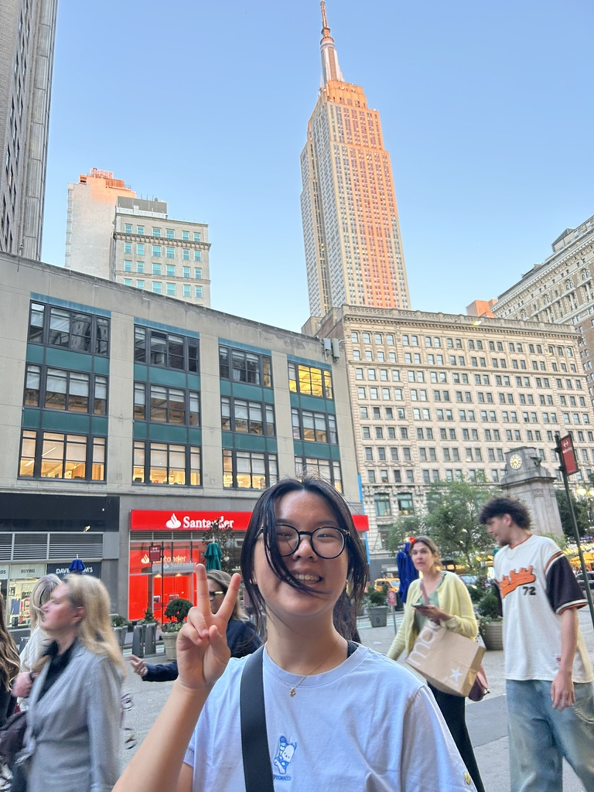
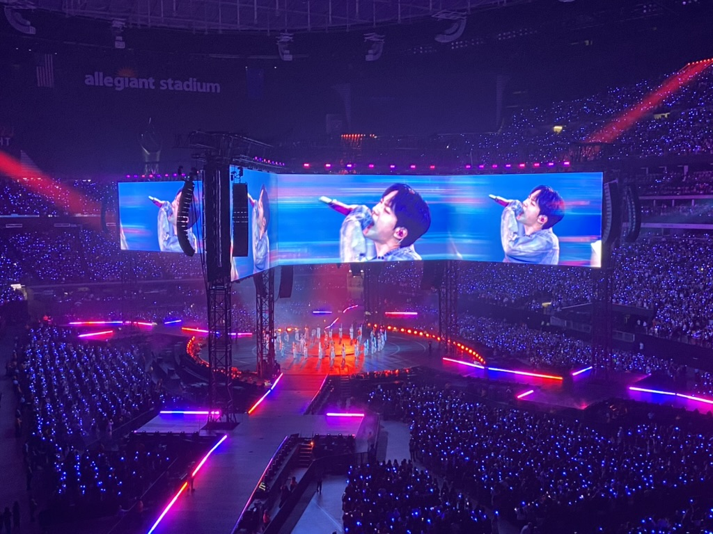
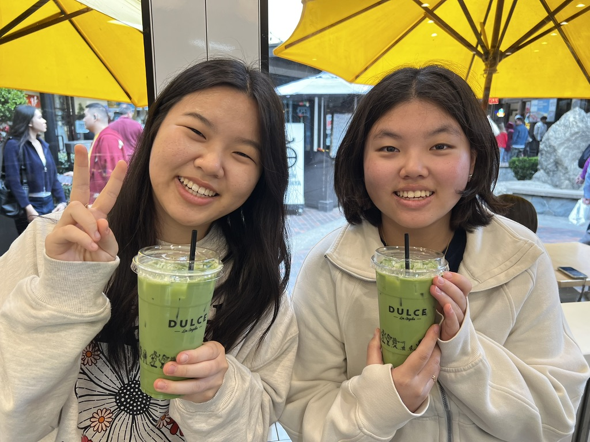

About me

Hi! Welcome to my homepage for Asia Am 191A. My name is Madison and I'm heading into my fourth year at UCLA. I'm a San Diego native and 2.5 generation Korean American. I love In-n-out as much as a good Korean bbq. My goals as a critical digital map maker are to:
- Learn about how maps can prompt us to reconsider the assumed homogeneity of racial/ethnic communities.
- Apply this in the context of health equity and barriers to accessing care.
- Uplift communities being surveyed by centering their stories and not statistics.
When I'm not mapping, I am...
- Listening to good playlists
- Watching kdramas
- Drinking boba/matcha with my sister
- Trying to learn a new language

